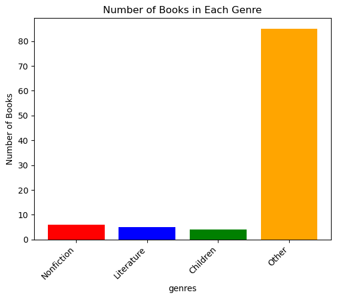
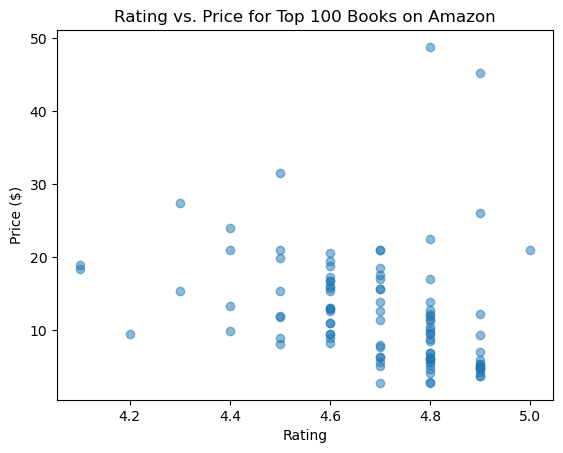

Do you often find yourself faced with the overwhelming task of choosing a book from the vast array of options available online? Ever wished to have insights into the most popular genres before making a decision? Your wish is granted! Join us on a journey through the top 100 best-selling books on Amazon as we unravel the mysteries of literary preferences. We'll meticulously analyze the data to identify the top three genres that dominate the charts. This exploration aims to simplify your book selection process, providing you with valuable information to make an informed and enjoyable choice for your next literary adventure. Let's dive into the world of Amazon's best sellers and discover the genres that captivate readers globally.
As we embark on this exploration, we begin by unraveling the rich tapestry of Amazon's top 100 best-selling books. A compelling insight emerges – three genres consistently reign supreme: nonfiction, literature, and children's books. This revelation is not just a snapshot of literary trends; it's a powerful guide for readers seeking their next immersive experience.
Armed with this knowledge, readers find themselves on a guided literary journey tailored to their personal tastes. Whether captivated by the compelling narratives of nonfiction, the enchanting world of literature, or the delightful stories crafted for children, these genres stand out as the frontrunners in the dynamic world of contemporary literature.
The world of literature is now at your fingertips. No longer do you need to settle for the unknown. Instead, confidently choose your next read from genres that captivate readers globally. Nonfiction, literature, and children's books become your compass, leading you to books that promise to be enjoyable and meaningful additions to your collection
In unraveling the rich tapestry of Amazon's top 100 best-selling books, a compelling insight emerges: the three genres that consistently dominate this coveted list are nonfiction, literature, and children's books. This revelation is not just a snapshot of literary trends; it's a powerful guide for readers seeking their next immersive experience. Whether you're drawn to the compelling narratives of nonfiction, the enchanting world of literature, or the delightful stories crafted for children, these genres stand out as the frontrunners in the dynamic world of contemporary literature. Armed with this knowledge, your next literary journey is not only guided by best-sellers but tailored to your personal tastes. So, why settle for the unknown when you can confidently choose your next read from the genres that captivate readers globally? The world of literature is at your fingertips, and nonfiction, literature, and children's books are your compass—leading you to a book that promises to be an enjoyable and meaningful addition to your collection.
I believe the dataset that I found is reliable. This is because, I found it at Kaggle.com
img 1.1
This visualization shows which genre the most common type of genre that is the most selled. The other section is an acummulate of all the other genres that are not selled as the top three.
img 1.2
This visualization shows the different prices of the top 100 books on amazon. As seen, the highest ratings are the books with low prices. We can calculate the average book price by calculating the mean which will give us $12.7086.
The top three best-selling genres from the top 100 best-selling books on Amazon are Nonfiction, Children's, and Literature. In the Nonfiction category, readers are drawn to a diverse array of captivating narratives that explore real-life experiences, offering insights into history, science, and personal journeys. The Children's genre continues to enchant audiences with imaginative tales that spark creativity and foster a love for reading among the younger audience. Literature, with its timeless appeal, encompasses a broad spectrum of genres and styles, attracting readers who appreciate the depth of storytelling and the exploration of the human experience. The popularity of these genres reflects the diverse tastes and interests of readers within the dynamic landscape of Amazon's best-selling book list.